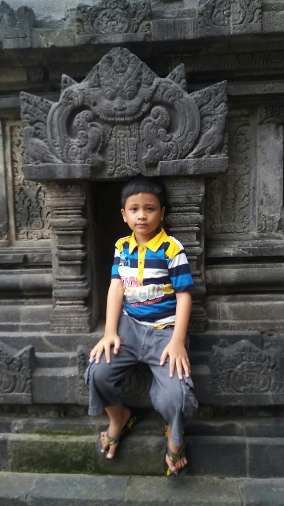
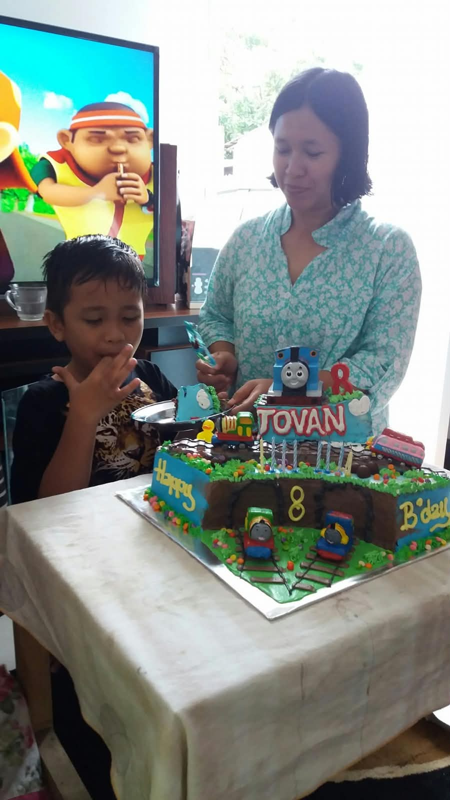
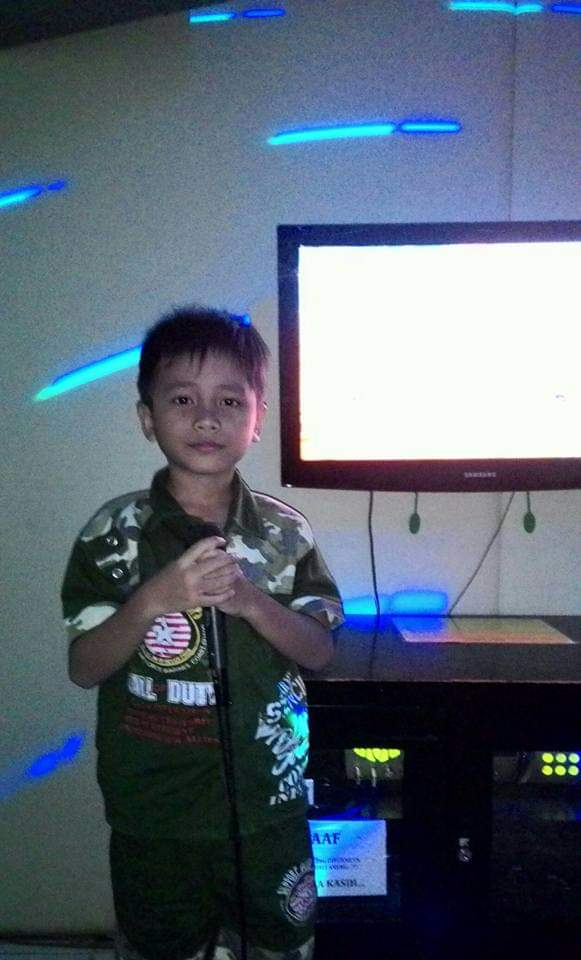
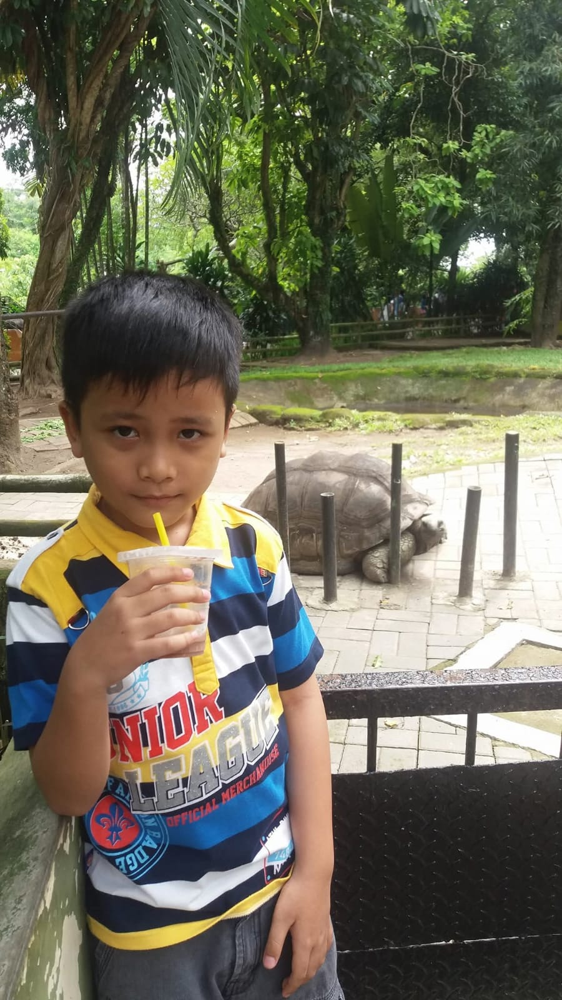

Biar kamu makin kenal dan paham sama aku... jadi izinin aku tunjukin sifat dan karakter asliku yaa 🤍

🕊️ Penyabar dan Penyayangdari dulu, aku orangnya gak suka di bentak, apalagi dimarahin. dulu waktu kecil aku sering dimarahin bapak walaupun aku ngelakuin kesalahan kecil, dan aku tau banget rasaa sakit yang diterima walaupun orang tersebut sayang sama kita. dari situ aku belajar memahami, saat menjalin hubungan dengan seseorang, yang jelas wanita sepertimu nggak akan pernah aku marahin hanya karena sebatas ego semata. karena bagiku menjaga perasaan kamu jauh lebih penting daripada menangin ego.

🎧 Rumah Cerita Kamudari dulu aku udah jadi pendengar yang baik. sekarang pun aku juga masih menjadi pendengar yang baik dan di favoritin ketika mereka lagi curhat. ada contoh mama aku, temenku viandra, temenku yang smp. aku selalu bisa ngerti gimana perasaan mereka yang lagi ditimpa oleh masalah yang sedang mereka ceritakan kepadaku. dan aku harap kamu mau menjadikanku sebagai pendengar favorit dari cerita-cerita kamu mulai dari hal paling random sampai hari-hari beratmu, aku akan selalu ada di sini buat kamuu.

🥺 Gampang Jealous & Khawatirjujur aku orangnya dari dulu emang gampang jelous. aku ceritain yaa dulu aku sering jealous waktu mamaku lagi mesra berdua sama bapakku, dan itu bener-bener pure jealous ajaa karena aku sayang banget sama mama aku wkwkw. dan ketika sama kamu, aku juga sering jealous kalau kamu lagi dideketin sama cowo lain diluar sana, karena emang iri aja nggak bisa nemenin kamu secara real saja disana :). apalagi waktu kamu sakit itu bikin aku selalu khawatir, mau itu kamu cuman kena luka kecil pun aku juga tetep khawatir karena aku juga gamau orang yang aku sayang banget ini ngerasain sakit :) tapi tenang yaa, ini juga tanda aku sayang banget dan selalu pengen kamu ngerasa aman.

🫂 Siap Jadi Second Dadbagiku pacaran bukan sekedar mengejar status resmi menjadi pacar. mindsetku, dari sisi cowok ketika kita udah memacari cewek, ia juga anak dari seorang ayah yang udah merawat dan menjaganya dengan baik dan penuh kasih sayang dari si cewek itu kecil. jadi makanya aku gak terima banget kalau ada cowok yang lebih mementingkan egonya daripada ceweknya ketika sedang menjalani sebuah hubungan. dan dari situ aku juga banyak belajar kalau cewek walaupun anak pertama sekalipun, dia tuh tetap harus dikasih yang namanya kasih sayang dan dibikin ngerasa aman ketika lagi sama cowoknya tersebut. dan disini aku siap jadi sosok pelindung yang selalu ngejaga, meratukan, dan bikin kamu merasa hangat & aman.